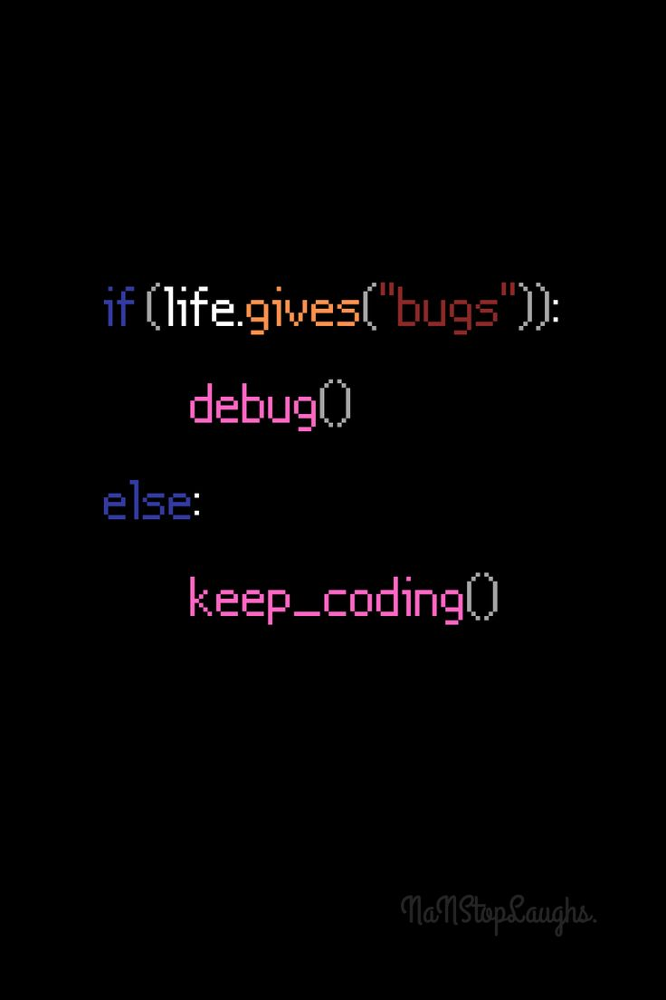

Website Starter
For small businesses that need a professional online presence.
From R3,500- 1 to 5 pages
- Mobile responsive design
- Contact form
- WhatsApp integration
- Basic SEO setup
- Deployment support
Services & Packages
Choose a starter website, a stronger business build, or ongoing management. Final pricing depends on pages, functionality, content, and integrations.
Website Starter
Business Website
Website Management
Extra Services
Client portals, lead forms, simple dashboards, support workflows, and business tools can be added as the website grows.
Responsive interfaces, dashboards, and simple workflows for internal or customer-facing tools.
Updates, fixes, new content, and steady improvements after launch.
Page structure and content direction for businesses that want to be found in their area.
Contact forms, enquiry capture, admin views, and client progress tracking.
